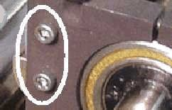
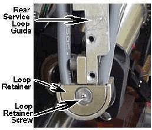
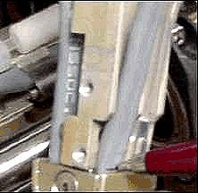

Remove / Install Z Axis Service Loop Cable on Non-linear Slide Pipettor Gantry
Caution: The instrument should be powered off when making or breaking electrical connectors to avoid damaging the instrument's electronics.
Note: Cables and tubing can be replaced separately or all together.
-
Remove the Z axis service loop cable.
- Power off the instrument.
-
Caution: To help prevent hardware from falling into the instrument during the removal and installation procedure, place a paper towel (10 inch square minimum) under the area being serviced.Move the pipettor gantry to the left of the Wash Tower, then manually move it downward a couple of inches using the Z pulley at the left end of the upper gantry shaft.
- Remove the Front Service Loop guide by removing the two screws holding it in place. Discard the guide , a new guide is in the kit.
- Remove the connector cover by removing the two screws holding it in place, then lifting the cover up about 1/2 inch to allow its left end to clear the housing.
-
Disconnect the transducer power and heater connectors.
Note: Might need to move the gantry down to access the connectors.
-
Slide the service loop cable out of the slot in the left side of the transducer housing and place the cable end out of the way.
Note: This cable may fit tightly into the slot. Slowly work the cable out of the loop, gently wiggle both ends, until the cable is removed.
- Disconnect the Z Axis cable from the X Interface PCB and remove the cable from the harness clamp.
-
Remove the two mounting screws which secure the Rear Service Loop Guide.

-
Lift the guide upward until the loop retainer screws are accessible.

-
Mark a line on the Z Axis cable where it enters the end loop.
Note: This mark will be transferred to the new cable and will be used for proper positioning of the replacement cable.

-
Remove the Service Loop retainer screw from the bottom of the rear guide (Cable side only) and remove the Z Axis cable from the cable guide.
Note: The cable may be difficult to remove. Slowly work the cable out of the loop, gently wiggle both ends, until the cable is removed.
-
Install the Z axis cable
Warning: When completed, the cable and tubing should not extend above the rear service loop guide with the pipettor at the Z home position (manually move pipettor to top) and should be similar in height to each other and to the rear guide.
- Transfer the line from the removed Z Axis cable onto the corresponding position on the replacement cable, then slide the cable into the bottom end of the rear Z Axis Guide, placing the mark at the position identified when removing it.
- Install the rear Z Axis Guide retainer and screw.
- Insert the lower end of the Z Axis Guide behind the gantry bearing ensuring that the cable and tubing is not pinched, then insert and tighten its two mounting screws.
- Route the connector on the P/N labeled end of the Z Axis cable under the pipettor tubing, through the harness clip, then plug it into its connector on the X Interface PCB.
-
Caution: The cable loop may rub on the instrument cover if looped too high. When completed, the cable and tubing should not extend above the rear service loop guide with the pipettor at the Z home position and should be similar in height to each other and to the rear guide.While holding the highest part of the tubing and Z cable side by side, insert the Z Axis cable into the transducer slot.
- Connect the transducer heater and power connectors together, then lay them flat on top of the housing.
- Install the Connector Cover using its 2 mounting screws, ensuring that during and after installation no wires are pinched or visible outside of the cover.
- Align the tubing and cable with the front service loop guide.
- Install the front Z Axis Guide using its 2 mounting screws, ensuring that the cable and tubing are properly routed in their slots in the guide.
-
- If the X Axis cable or tubing will not be replaced, then proceed to the verification section near the end of this procedure.
- If the X Axis cable is going to be replaced, then continue to Remove / Install the X Axis Cable
- If the tubing is going to be replaced, then Remove / Install the Pipettor Tubing
-